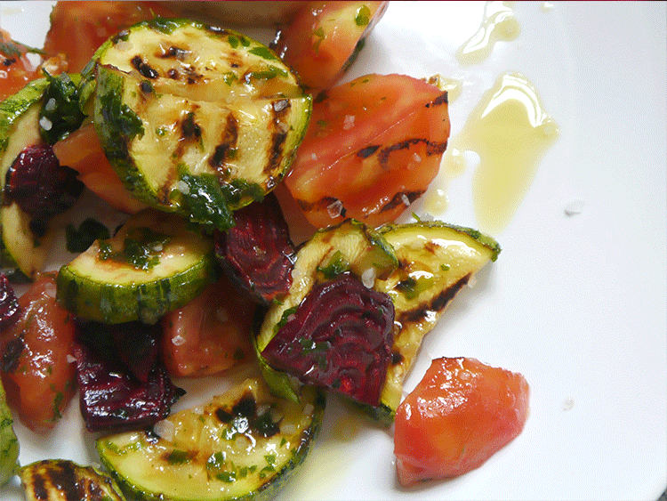

Le diste duro al guiso y está perfecto, pero ahora empezás a calcular cuotas para las vacaciones y se te viene la idea de cuidarte un poco. Esta bien, es saludable y uno ya se llena con menos. Pero todavía no llegó el calor para clavar ensaladita todos los días. Y ahí llega la solución: ensalada tibia. Y con verduras a la plancha. Ovación de pie
Ingredientes:
- 1 zucchini
- 2 tomates
- 1 remolacha
- 1 diente de ajo
- 1 manojo de perejil
- Sal y un buen aceite de oliva
Procedimiento:
Primero vamos a cortar el zucchini en rodajas de más o menos 1 cm. de espesor. Seguimos con la remolacha: pelarla y cortarla en láminas finas. Pelamos los los tomates y cortarlos al medio. Calentar una plancha unos 10 minutos hasta que esté bien caliente. Colocar los zucchinis y las remolachas y cocinarlos hasta que estén tostados (¡y con las rayitas!). Reservar. Colocar los tomates al medio sobre la plancha. Es un toque nomás, un minutito de cada lado, sino se van a desmayar y se les va a salir todo el líquido. Sacarlos y partirlos en trozos más pequeños. Mezclar todos los ingredientes en un bol, agregar bastante ajo y perejil picados, sal, pimienta y un buen chorro de aceite de oliva. Y comer inmediatamente, que para eso es una ensalada tibia.